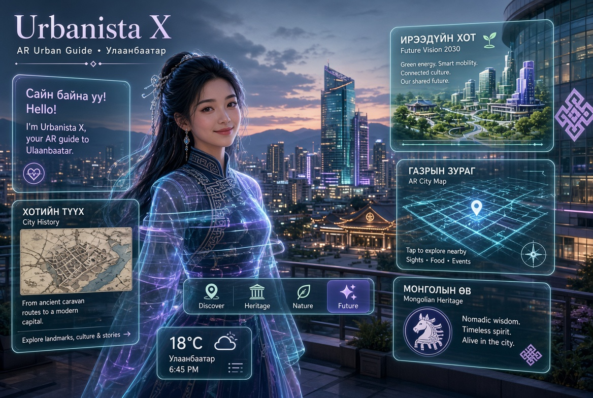

Ганцаар аялагчдад зориулсан мэдрэмжтэй AI + AR хамтрагч. Тэрээр Улаанбаатарын сэтгэлийг илчилдэг — түүний түүх, хүмүүс, аль хэдийн эхэлж буй нөхөн сэргээх ирээдүй.

Urbanista X-ийн Улаанбаатар дахь үзэл баримтлалын зураглал
Urbanista X нь зөвхөн дижитал хөтөч биш. Тэрээр Улаанбаатарын гудамжаар тантай хамт алхдаг дулаахан, соёлын гүнзгий суурьтай хамтрагч юм. AR давхаргыг ашиглан тэрээр олон давхаргат түүхүүдийг хуваалцдаг — эртний караван замын маршрутаас эхлээд социалист үеийн төлөвлөлтийн шийдвэрүүд, шинээр бий болж буй ногоон коридор, олон нийтийн санаачилгатай нөхөн сэргээлтийн төслүүд хүртэл.
Эхлээд ганцаар аялагчид болон сониуч орон нутгийн иргэдэд зориулан бүтээгдсэн бөгөөд бодит цагийн навигаци, түүхэн контекст, хотын боломжит ирээдүйг төсөөлж, халамжлахад урьсан тоглоомын адал явдлуудыг нэгтгэдэг.
Энэ төсөл нь хүн төвтэй хот төлөвлөлт (Gehl-ийн зарчмуудаас урамшсан), орон нутгийн мэдлэг, хүртээмжтэй AR технологийн уулзвар дээр байрладаг. Тэрээр газар оронд сэтгэл хөдлөлийн холбоог гүнзгийрүүлэхийг зорьдог — учир нь хүмүүс хайрласан зүйлээ хамгаалдаг.
Байршил
Улаанбаатар, Монгол
Нээлт
2026 оны 11-р сар
Төрөл
AR туршлага + AI хамтрагч
Төвлөрөл
Ганцаар аялагчид & нөхөн сэргээх түүх ярих
Таныг алхаж буй хотыг бүрдүүлсэн хот төлөвлөлтийн шийдвэр, нүүдлийн өв, өдөр тутмын амьдралын олон давхаргат түүхүүд.
Хүн төвтэй гудамж, нийтийн орон зай, гэнэтийн ногоон цэгүүдийг тэргүүнд тавьсан зөөлөн навигаци.
Хөршүүдийн ирээдүйн алсын харааг нээж, хувийн эргэцүүлэл урих тоглоомын даалгаврууд.
Мэдлэгтэй, эелдэг орон нутгийн найз шиг мэдрэгддэг AI хамтрагч — хэзээ ч хүйтэн аялалын скрипт биш.
Дизайны хандлага
Urbanista X нь хотуудад зориулсан хамгийн сайн дижитал хэрэгслүүд нь хүмүүст эргэн тойрныхоо биет газруудыг хайрлуулахад тусалдаг хэрэгслүүд гэсэн итгэл дээр суурилдаг.
Бид соёлын байгууллага, аялал жуулчлалын зөвлөл, технологийн түнш, нөхөн сэргээх хотын туршлагыг чухалчилдаг санхүүжүүлэгчидтэй түншлэхэд нээлттэй байна.